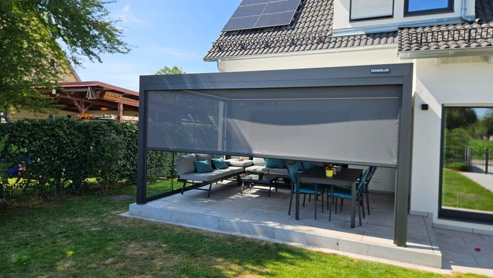
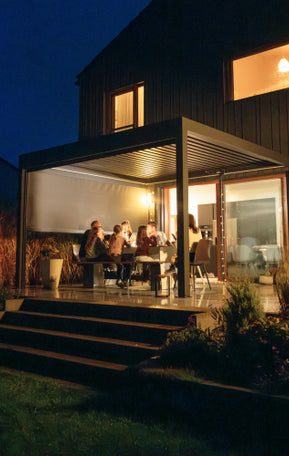

LIVING
Most pergolas ask you to choose between looking good and actually working. Either the roof leaks the first time it rains hard, or the design is so plain it might as well be a car port.
The PERGOLUX Pergola 4 Pro is one of the few models that doesn't force that compromise — and it happens to be the brand's most popular pergola for a reason.

If you've spent any time comparing pergolas for a German or Austrian garden, you already know the two things that separate a good one from a disappointing one: whether it actually survives winter snow load, and whether the manufacturer can prove it with real certification instead of marketing language.
PERGOLUX doesn't just call this their "most popular model" as a sales tactic — it's the one that sits in the sweet spot between the manual entry-level Pergola 4 and the premium Pro Max. You get full motorisation, integrated LED lighting, and the reinforced fourth-generation frame, without paying for the extra-wide beams and maximum span capacity that only larger properties really need.
For anyone who wants a genuinely "set and forget" outdoor space — open the louvres with a remote or an app, close them before a storm rolls in — this is the model PERGOLUX itself points most customers toward.
Prices change with seasonal promotions — check the live price before deciding.
Check Price on PERGOLUX →This is where the Pergola 4 Pro earns its reputation. The structure is TÜV Rheinland certified and engineered for snow loads up to 320 kg/m² and wind speeds up to 118 km/h, depending on configuration — figures that matter a great deal more in Bavaria or the Alpine foothills than in a showroom photo.

The frame uses marine-grade 6063-T5 aluminium with double powder coating, which is the same standard used in coastal and industrial applications where corrosion resistance actually gets tested by the environment, not by a lab report nobody reads. PERGOLUX backs the construction with up to 11 years of warranty — a figure most competitors in this price range don't come close to matching.
The double-walled louvre roof opens and closes at the touch of a button, either through the included remote, the PERGOLUX app, or a connected smart home system. Thanks to built-in Matter connectivity, it pairs directly with Apple Home, Google Home, Amazon Alexa, and Samsung SmartThings — no separate hub or installer required.
For anyone who already has a smart home routine in place, being able to schedule the roof to close automatically before rain, or dim the integrated LED strips in the evening, is the difference between a pergola you operate and one that simply works in the background.
Configure your size, colour, and installation type directly on the official site.
Configure Your Pergola 4 Pro →PERGOLUX's fourth-generation roof system is designed to install up to four times faster than earlier versions, with a step-by-step guided assembly app on your phone. Most owners with basic DIY experience manage a standard 3x4m installation over a weekend.
If you'd rather not handle it yourself, PERGOLUX's assembly partner can quote a professional installation.

This model makes the most sense if:
If your space is significantly larger, or you need maximum wind and snow ratings for an exposed location, it's worth comparing this against the Pro Max — but for the vast majority of terraces and gardens, the Pro is the more sensible investment.
The PERGOLUX Pergola 4 Pro earns its "most popular model" label honestly: it's certified, motorised, backed by a long warranty, and priced below the premium tier without feeling like a compromise. For a market that values documented engineering over marketing claims, that combination is exactly what makes it work.
PERGOLUX regularly runs limited-time promotions on this model.
View Current Offer →Is the Pergola 4 Pro suitable for heavy snow?
Yes — it's rated for snow loads up to 320 kg/m², depending on configuration, and is TÜV Rheinland certified.
Can I control it with Alexa or Google Home?
Yes. Built-in Matter connectivity allows direct pairing with Apple Home, Google Home, Amazon Alexa, and Samsung SmartThings.
How long does delivery take?
When the model is in stock, delivery typically takes 2–6 business days. Orders over €1,000 ship for free.
What warranty does it come with?
Up to 11 years on the construction for the Series 4 range.
Do I need a building permit?
It depends on your German federal state (Bundesland) and the project's dimensions. PERGOLUX offers an interactive permit checker directly on their site.